Albatron GeForce FX 5700 Ultra
Šiais laikais daug kas mėgsta pažaisti kompiuteriu. Kai kuriems žmonėms tai yra vienas iš laisvalaikio praleidimo būdų. Žaidimai pastoviai tobulėja, jų grafika gerėja, ir norint "išspausti" iš žaidimo viską, kas tik įmanoma, tenka dažnai tobulinti savo namų kompiuterį, kad jis būtų pajėgus suteikti jums visapusišką malonumą. Greičiausiai "senstanti" ir dažniausiai keičiama detalė "geimerių" kompiuteryje yra vaizdo plokštė. Štai ir aš, pagaliau, pasikeičiau savo senuką "POV geforce4 mx440" į daug galingesnį "Albatron geforce fx 5700 ultra". Šiame straipsnyje aš pabandysiu jums kuo geriau papasakoti, kas tai per vaizdo plokštė.
Pirmas žvilgsnis
Istorija prasidėjo 2003 metų guodžio mėnesio pradžioje. Aš pamatęs, kad mano vaizdo plokštė jau visapusiškai paseno, ėmiau dairytis po internetą, ieškodamas geros vaizdo plokštės, kurios kainos ir kokybės santykis būtų geriausias. Po savaitės paieškų ir įvairiausių straipsnių, apžvelgiančių vaizdo plokštes, skaitymo, aš pagaliau suradau vaizdo plokštę, kuri man pasirodė ganėtinai priimtina. Man patiko jos kainos ir greičio santykis. Ta plokštė, aišku, buvo iš nVidia "stovyklos", nes aš esu būtent nVidia ir jos plokščių "geforce" gerbėjas. (Šiuo savo teiginiu, aš nieko nenoriu pasakyti blogo apie ATI!). Aš renkuosi geforce vien iš moralinių ir religinių įsitikinimų.
Po plokštės užsakymo, man teko apie mėnesį laukti, kol ji buvo atgabenta man į namus... Gavęs vaizdo plokštę, aš buvau apimtas ekstazės. Tai buvo vienas iš gražiausių geforce'ų, kuriuos man teko matyti per savo gyvenimą... Mane labai sužavėjo šios plokštės įpakavimas... Jis yra labai kokybiškas ir gražus. Taip pat jo dydis yra įspūdingas... Tuoj pat griebiau foto aparatą ir pradėjau fotografuoti plokštę įvairiais rakursais. Štai pateikiu keletą nuotraukų:
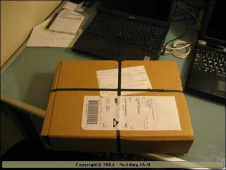 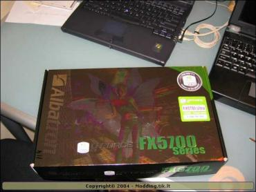 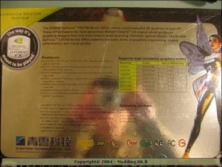 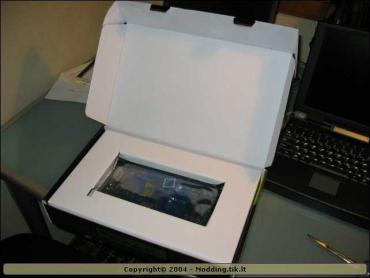 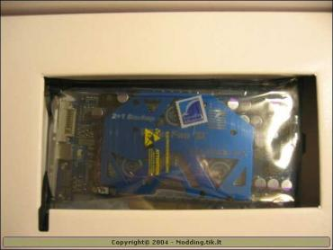 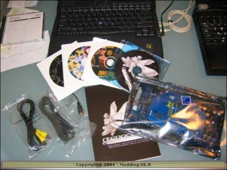 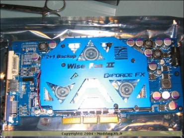 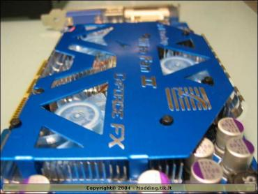
Specifikacijos
Čia pateikiu šios plokštės specifikacijas:
- Grapics Engine: GeForce FX 5700 ULTRA
- Memory Size: 128MB DDR II
- Memory Bus: 128bit
- Engine Clock: 475MHz
- RAMDAC: 400MHz
- Max. Resolution: 2048x1536@85Hz
- Bus Standard: AGP 8X / 4XVGA
- Output: Yra
- TV Tuner: Nėra
- TV-out: Yra
- VIVO(Video-In Video-Out): Nėra
- DVI: Yra
- WINDVD: Yra
- WIN DVR: Nėra
- WINDVD Creator: Yra
- Power DVD: Nėra
- Power Director: Nėra
- 3D GAMES: Duke Nukem: Manhattan Project Game Pack
Šiai vaizdo plokštei reikalingas bent jau "Detonatorius" (draiveris) 52.14, nes su ankstesniais draiveriais ji gali visai neveikti, arba veikti ne taip, kaip ji turėtų. Šie draiveriai yra kompaktinėje plokštelėje, kuri yra supakuota kartu su šia plokšte... Taip pat šiame CD yra: DirectX 8.1, DirectX 9.0b, NvTweak (spartinimo programa), senesni draiveriai. Aš kolkas dar neišbandžiau OC (turbinimo) programėlės, bet artimiausiu metu to turbūt ir nedarysiu, nes nėra reikalo tuom užsiiminėti.
Dabar norėčiau atkreipti dėmesį į plokštės "kietąją" (hardware'inę) pusę, o tiksliau į aušinimą. Priekinė plokštės dalis yra padengta dideliu aliumininiu radiatoriumi, kuris ganėtinai gerai aušina vaizdo plokštės procesorių ir atmintį. Šilumai išsklaidyti, ant radiatoriaus yra pritvirtinti 3 ventiliatoriai. Taip, trys! Dabar jūs turbūt pagalvojote, kad plokštė sukelia nepakeliamą ūžesį, bet noriu jus iškart nuraminti. Plokštė veikia tikrai negarsiai ir ją netgi galima būtų priskirti "silent" (tyliųjų) klasei. Beto visi trys ventiliatoriai pastoviai nesisuka... Veikia tik 2, o trečias įsijungia, kai plokštės procesoriaus temperatūra pasiekia 56 laipsnius celsijaus arba, kai nustoja veikti kitas ventiliatorius. Savotiška "back-up" sistema turbintojams. Atminties moduliai yra aušinami taip pat labai gerai ir kitoje vaizdo plokštės pusėje. Ant jų yra pritvirtinti aliumininiai radiatoriai.
Norėčiau pridurti, kad plokštės temperatūra per visus testus neviršijo 44 laipsniu celsijaus, ir tai rodo, jog aušinimas veikia, ir veikia labai gerai. Dabar pateikiu dar keletą nuotraukų, kad jūs geriau įsivaizduotumėte, apie ką aš čia kalbėjau:
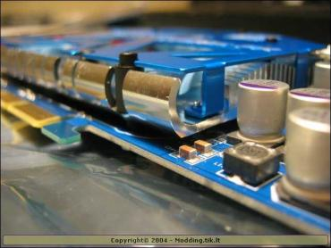 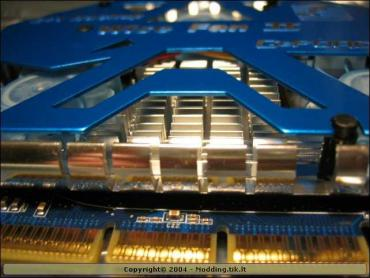 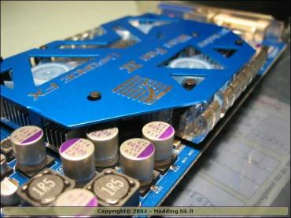 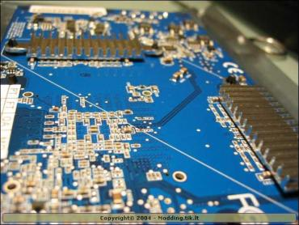 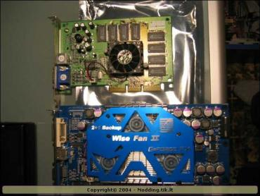 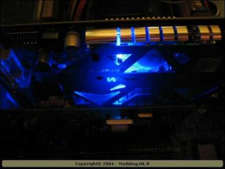 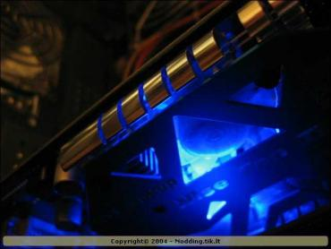 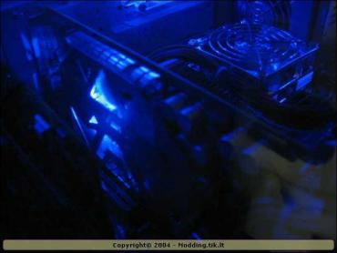
Testai
Testudamas šį geforce'ą, naudojau savo kompiuterį, kuris nėra pakankamai galingas, kad parodytų visas plokštės galimybes, bet visdėlto gavau neblogus rezultatus. Testavimas vyko ant štai tokios konfiguracijos kompiuterio:
- CPU - Athlon XP 1700+ @ 1467mhz
- MB - Biostar M7vit Pro (KT400) BIOS 2003 / 07 / 28
- Memroy - pqi pc 2700 @ 333mhz
- HDD - Samsung 20GB 7200rpm & Seagate 80GB 7200rpm
- Sound - Creative SB 5.1 Live
- CDRW - Lite-on 48x24x48
- DVD - Samsung 48x/16x
- PSU - Q-Tec 550W
- Video - Albatron GeForce FX 5700 Ultra (Detonator 52.16)
- OS - Windows XP + SP1
Štai kokius rezultatus gavau, testuodmas vaizdo plokštę su 3Dmark 2001SE, 3Dmark 2003 ir Aquamark 03 programomis:
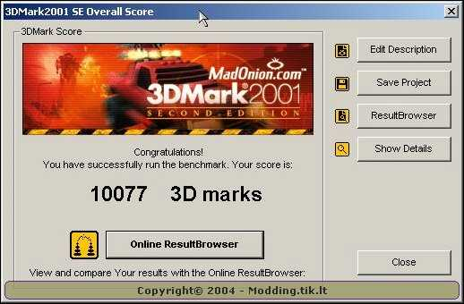
Išvados
Pliusai:
- Geras įpakavimas
- Gera kaina
- Graži plokštės išvaizda (mano skonis)
- Geras greičio ir kainos santykis
- DX 9 palaikymas
- Dual ekranai
- Geras ir tylus aušinimas
- Geras support'as
- Geras bundle (daug soft'o ir geras manual'as)
Minusai:
- Nėra DVI - VGA konverterio
- Nėra VIVO (video-in-video-out)
- Šiek tiek brangesnė už konkurentės ATI plokštes
Aš nei sekundės nesigailėjau, kad įsigyjau būtent šią plokštę. Gavau netik greitą plokštę, bet ir daug soft'o, žaidimų, kabelių ir labai "kietą" Albatron case badge'ą (lipduką kurpusui). Žiūrint modder'io akimis, man ši plokštė taip pat patinka, nes jos spalva labai dera prie mano PC korpuso, joje yra įmontuotas melynas šviesos diodas ir ji turi 3 UV šviesą atspindinčius fan'us. Šiai plokštei suteikiu 10 balų iš 10 galimų, nes Albatron firma pagamino tikrai dėmesio vertą daiktą! Jei norite manęs ko nors paklausti arba pakomentuoti mano straipsnį - rašykite man: marlin@delfi.lt arba užeikite į www.modding.lt forumą ir klauskite!
P.S. Plačiau apie šią plokštę, galite paskaityti čia.


{kind=link}
{kind=link}
{kind=link}
{kind=link}
{kind=link}
{kind=link}
{kind=link}
{kind=link}
{kind=link}
{kind=link}
{kind=link}
{kind=link}
{kind=link}
{kind=link}
{kind=link}
{kind=link}
{kind=link}
{kind=link}